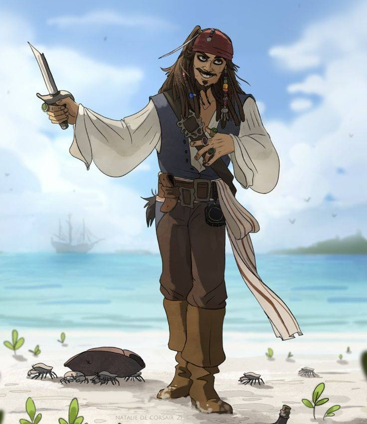

A MESSAGE FROM THE SEA
تولدت مبارک
دخترِ دریاها
امشب این کشتی مقصد دیگری دارد...
THE STORY BEGINS
امشب در میان این همه دریا...
امشب، در دورترین نقطهی دریا جایی میان مه و صدای موجها یک کشتی برای مدتی از حرکت ایستاده است
نه برای پیدا کردن طلا نه برای جنگ و نه برای پیدا کردن افسانهای که سالهاست روی نقشههای قدیمی گم شده.
امشب این کشتی فقط یک مقصد دارد...
تو :)
THE CAPTAIN
کاپیتان این سفر

JACK SPARROW
بعضی سفرها را نمیشود روی نقشه پیدا کرد...
نامهای از دل دریا
━━━━━ ⚓ ━━━━━برای بعضی آدمها، دریا فقط آب و موج نیست.
دریا یعنی آرامش، یعنی خیره شدن به افق، جایی که آبیِ بیپایان آب در خاکستریِ آسمان گم میشود.
جایی که برای چند لحظه، همهچیز آرام میشود و آدم میتواند فقط خودش باشد.
شاید برای بعضیها دریا یک مقصد باشد،
اما برای بعضی آدمها...
دریا شبیه خانه است.
و شاید تو هم کمی شبیه دریا باشی؛ آرام از دور، عمیق از نزدیک و پر از چیزهایی که هنوز کشف نشدهاند.
امروز یک فصل دیگر از سفرت تمام شد و یک فصل تازه شروع میشود.
نمیدانم این فصل قرار است چه طوفانهایی داشته باشد، چه غروبهایی، چه آدمهایی و چه خاطراتی...
اما امیدوارم هر جا که این سفر تو را برد، همیشه بخشی از آرامش دریا را با خودت داشته باشی.
اگر روزی موجها بلند شدند، سکان را رها نکن.
اگر مه، افق را پنهان کرد، کمی صبر کن... همیشه جایی پشت مه، دوباره آسمان آبی منتظر است.
“Not all treasure is silver and gold, mate.”
چون بعضی گنجها نه طلا هستند، نه جواهر.
بعضی گنجها، لحظههایی هستند که دلمان میخواهد هیچوقت تمام نشوند.
یک غروب آرام کنار دریا، صدای موجها، آسمانی که بین آبی و طوسی معلق مانده، و یک حس خوب که نمیشود توضیحش داد.
برای سال جدید زندگیات، آرزو میکنم بیشتر از همیشه چنین لحظههایی داشته باشی.
سفرهای تازه، آدمهای خوب، خاطراتی که ارزش نگه داشتن داشته باشند و رویاهایی که ارزش جنگیدن برایشان را داشته باشند.
و اگر روزی از تو پرسیدند بزرگترین گنجت کجاست...
شاید فقط به دریا نگاه کنی، لبخند بزنی و جوابت را برای خودت نگه داری.
چون بعضی گنجها
قرار نیست پیدا شوند...
قرار است زندگی شوند.
تولدت مبارک،
دخترِ دریاها 🌊
امیدوارم فصل جدید زندگیات به زیبایی یک غروب کنار دریا، به آرامی موجها و به وسعت اقیانوس باشد.
Yours truly,
The Captain ⚓
اگر این نامه زیادی شاعرانه شد، تقصیر دریاست.
و اگر فکر کردی جک اسپارو نوشته...
خب، احتمالاً خودش هم همینو میگه. 😏🏴☠️
THE TREASURE WAS NEVER THE GOLD
بعضی گنجها،
ارزش پیدا کردن دارند.
⚓ Happy Birthday Pirates

THE END OF THE VOYAGE
هر ماجراجویی روزی به پایان میرسد...
اما بعضی داستانها
هرگز تمام نمیشوند.
بادبانهایت همیشه برافراشته،
دریایت همیشه آرام،
و افقت همیشه روشن باشد.
Yours truly,